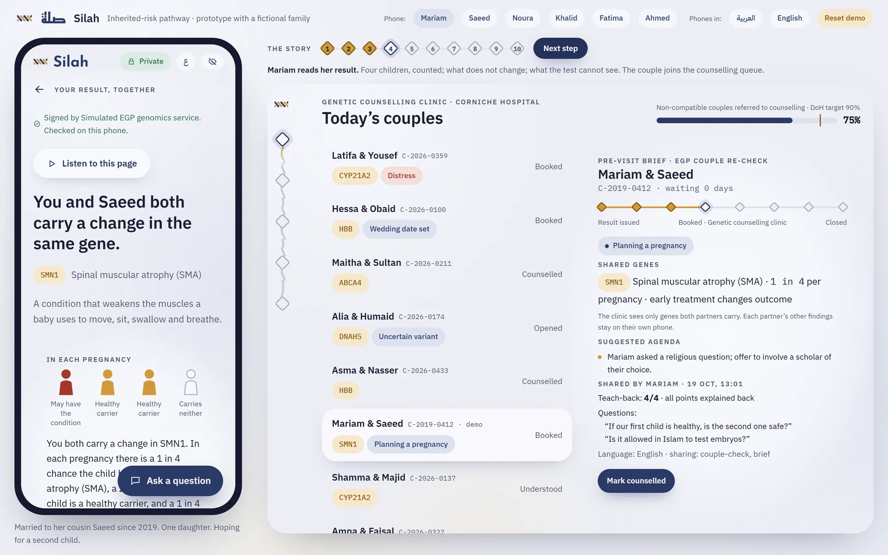
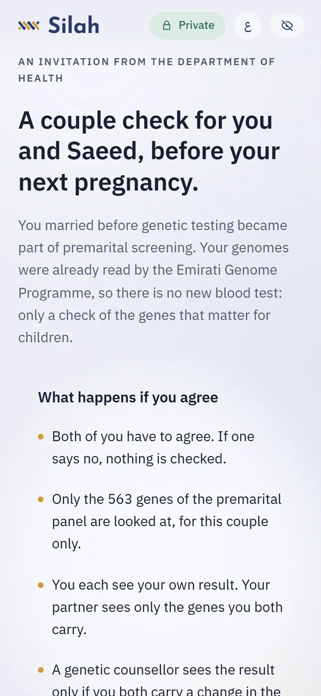
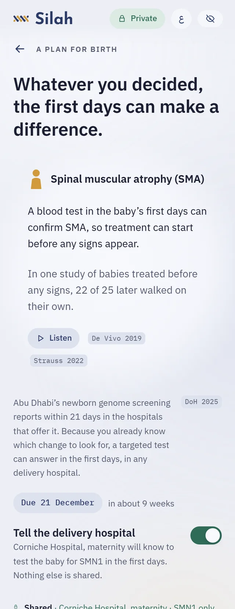
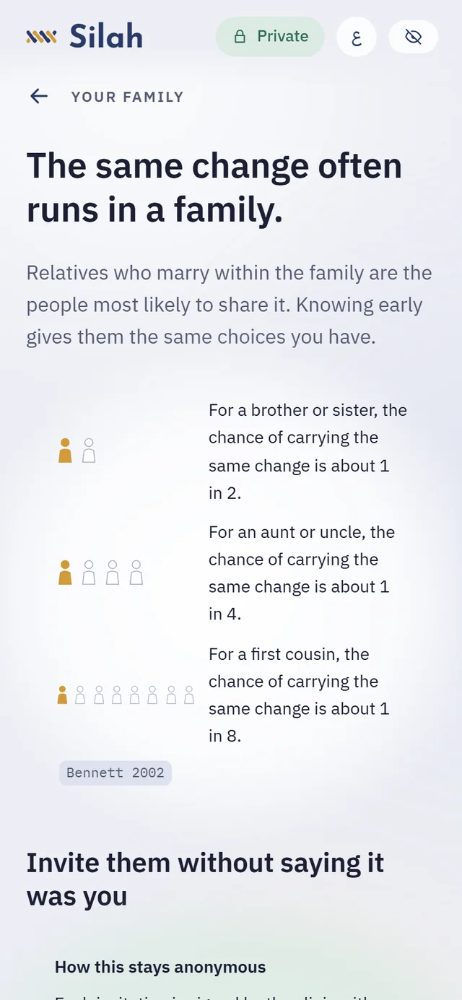
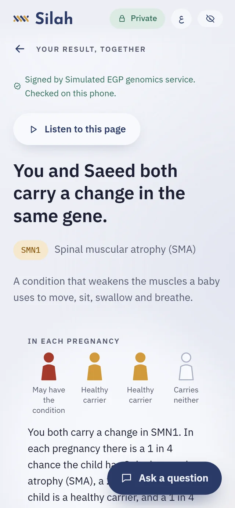
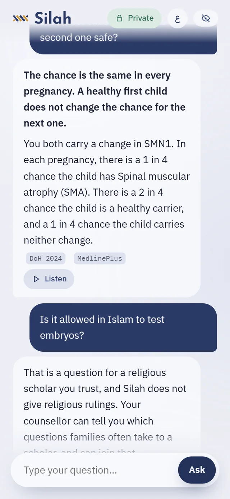

Future Health Digital Innovation Challenge · Challenge 03
Inherited disease risk, explained privately and acted on in time.
Silah is a phone companion and a health-system pathway for Abu Dhabi families, in Arabic and English. It explains a couple’s genetic result, brings them to a counsellor, plans a test at birth and lets relatives be invited anonymously. It never decides for anyone.
A working prototype with a fictional family. It runs in your browser and works offline; nothing you do is sent anywhere.

The demo: a family’s phone and the health system side by side, in one browser.
15,628Emirati births in Abu Dhabi in 2024
3 in 4of this year’s Emirati births, or more, are to couples the premarital genetic test never reached (estimate)
900,000+Emirati genomes already sequenced by the Emirati Genome Programme
17genetic counsellors and clinical geneticists for nearly 11 million people in the UAE
How it works
Three moments where knowing the risk still changes an outcome
The mandatory premarital test reaches couples marrying now. Silah also reaches the couples who married before it, the babies they are expecting and the relatives who share their genes.

1 · Before the next pregnancy
A couple check on genomes already held
The health system invites couples who married before the mandate, ranked only on what they have declared, never on their genes. Both partners consent; no new blood test is needed.
An at-risk couple knows before the next pregnancy and reaches a counsellor.

2 · At birth
A test in the first days, whatever they chose
One switch tells the delivery hospital which change to look for. DoH’s newborn genome screening reports within 21 days; a targeted test of the known change can answer in the first days, in any delivery hospital.
For SMA or Krabbe disease, treatment can start before signs appear.

3 · In the family
Relatives invited without saying who sent it
The same change often runs in a family. A carrier sends invitations that the clinic can verify but cannot trace back to the sender, using blind signatures (RFC 9474).
Relatives come to testing early, with a reason, and nobody is exposed.

For families
A result people can understand, and a choice that stays theirs
The result arrives signed by the lab and is checked on the phone before it is shown.
Four children, counted. One may have the condition, two are healthy carriers, one carries neither, in every pregnancy.
What “compatible” does not mean. In the demo, a cousin couple’s certificate says “No risk”, where Silah’s model gives about 1 in 160 per pregnancy for the panel’s conditions. Silah shows it, and names the lab’s detection rates it rests on.
Four short questions check that the picture is clear, in the person’s own language.
Options at equal weight, in a fixed order, with no recommendation.
Private by default. Each partner sees only the genes both carry. Anything else is shared by choice, with a signed receipt that can be withdrawn.

Questions
Answers only from checked facts
Common questions are answered from fact cards built for this family’s result. Questions about distress, ending a pregnancy, religious rulings or someone else’s result go to a person before any model sees them.
The model chooses, the cards speak. For other questions, a language model on the device (Gemma 4) picks which checked sentences answer. The person reads those sentences, never the model’s own wording. Nothing leaves the device.
Options never appear alone. If the model picks one, all of them are shown, in a fixed order.
Narration of the fixed explanations in Arabic and English, and larger text, for people who read less easily.
For the health system
Counselling time goes to decisions, not biology lessons
Each counsellor starts from a brief that shows what the couple already understood and what they asked. Urgent cases come first.
Outreach ranked on declared signals only: being related, an affected child, planning a pregnancy.
Maternity sees active birth plans and records the newborn result, which reaches the parents’ phone.
DoH’s 90% referral KPI is tracked live, with every count under 5 suppressed.
Responsible by design
Safe because of how it is built, not because a model behaves
It never steers a decision
Options appear at equal weight in a fixed order. What a person reads is written in advance and checked; in testing, a verifier also removes the model’s directive or certain sentences, and any chance given for the wrong outcome. Cancelled marriages and any single reproductive choice are never counted as success.
0 directive sentences from Gemma 4 E4B across 52 test answers, many of them traps.
A person for the hard questions
Distress, ending a pregnancy, religious rulings, blame and other people’s results go to a counsellor or a scholar, before any model. A call back is one tap away, and the phone says a counsellor has seen a request only once the clinic confirms it.
Checked end to end: a distress message gets 999 and 998, and “seen by a counsellor” appears only after the counsellor marks it.
Every number can be checked
The risk kernel computes with exact fractions, and each number carries its arithmetic and its source. For cousins it counts changes inherited from a shared ancestor. Detection rates come from the lab; without them, a range. Assumptions are labelled where they are used.
175 unit tests, including a grid of values worked out by hand.
Each person’s result stays theirs
Genetic data stays with the lab and on the person’s phone, encrypted. Partners see only the genes both carry; sharing is signed, logged and revocable; invitations name no sender.
Checked end to end: neither partner’s private finding reaches the other or the clinic.
Evidence
Tested through the real interface
175unit tests: risk kernel, verifier, typed questions, routes, cryptography, population model
30end-to-end checks that play the whole story through the real screens
0WCAG 2.2 AA violations on 18 screens, in Arabic and English
22/22grounded questions answered by Gemma 4 E4B, with no directive sentence
Who to invite first
At-risk couples found per 100 tests, after 200 tests, in a simulated consanguineous population using published Emirati carrier frequencies (5 seeds). Starting from families with an affected child finds about four times more than random outreach.
Cascade from families
5.3
Declared related first
3.0
Random
1.3
Readable in both languages. Silah’s explanations read at US school grade 6.4 in English, against 14.2 for the DoH information sheet couples sign today, and score 83.4 against 67.4 on OSMAN, the Arabic readability scale. Every chance is written as a count, like “1 in 4”, never as a percentage.
Also verified: offline use on an Android 13 emulator in airplane mode; Gemma 4 E2B running inside the browser on WebGPU. All figures come from scripts in the repository.
Film
Silah in two minutes
Path to pilot
One clinic first, then every couple married before the mandate
Silah uses what Abu Dhabi has already built: the genomes, the 563-gene premarital panel (DoH lists 570 names; seven are repeats or older names of listed genes), the counselling service and the referral KPI. No new sequencing is needed.
Months 0–3
Approve and host
DoH approves the result format and consent wording. Services hosted in the UAE. Clinical review of the birth-plan text.
Months 3–9
Pilot at one centre
One premarital centre with Corniche Hospital counselling and maternity. Silah against the current report, randomised by week.
Months 9–18
Reach married couples
Invite couples married before the mandate, and offer birth plans across SEHA maternity units.
The case for the programme owner
Genetic counsellors and clinical geneticists in the UAE
17 for ~11 million people
Measured
Non-compatible couples in Abu Dhabi today
about 125 a year
Measured
Married couples re-checked each year
20,000
Assumed
At-risk couples the re-check finds
about 960 a year, 8× today
Priced
Licence per couple served
AED 100
Assumed
Annual cost for 22,600 couples
about AED 2.26 million
Priced
Who pays
The programme owner, DoH or M42. Families never pay and never see advertising.
There is no server cost per question: the language model runs on the device. Silah does the explaining and the triage, so a national genetics workforce of 17 can do the counselling.
An independent entry. I lead AI for the internal audit function of a European banking group, where I audit information systems against the GDPR and the EU AI Act, and I build offline clinical AI. I placed 3rd of more than 850 teams in Google’s MedGemma Impact Challenge 2026. I wrote Silah’s risk kernel, verifier, cryptography, phone app and simulated health-system side, and ran the model evaluation.
Built with
Phone appPreact (a lightweight React) and Vite. It installs from the browser and works offline.
Language modelGemma 4, on the phone through Transformers.js or on the counsellor’s computer through llama.cpp.
SignaturesEd25519 on results and receipts; RSA blind signatures so relatives can be invited without revealing who sent the invitation.
Clinical sourcesThe DoH Premarital Screening Standard V3 and published Emirati carrier frequencies.
Every component is open-licensed. No personal data.